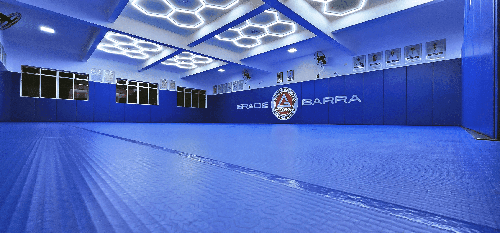
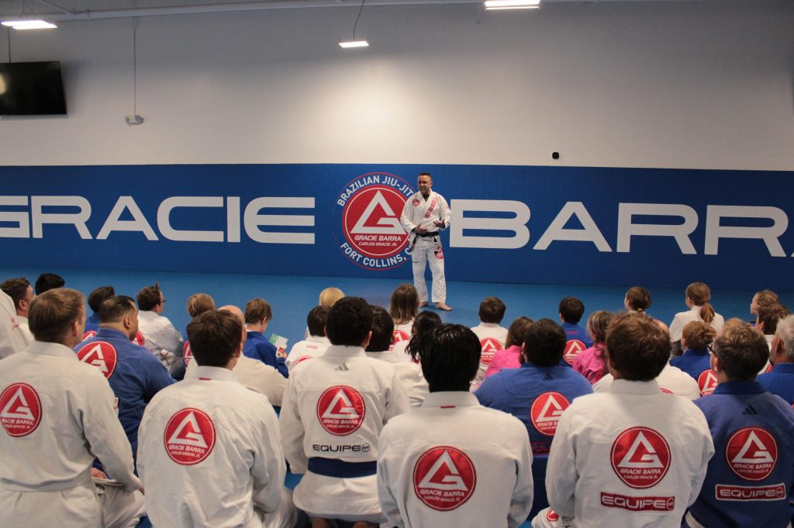

Uma das características que tornam a Gracie Barra especial é a sua preocupação com a formação humana de seus alunos. Dentro da academia, cada treino é uma oportunidade de crescimento físico, mental e emocional. O Jiu-Jitsu ensina que vencer não significa apenas derrotar um adversário. Muitas vezes, a maior vitória acontece quando uma pessoa supera seus próprios medos, inseguranças e limitações. Por isso, a Gracie Barra valoriza princípios que acompanham os alunos em todas as áreas da vida.
O respeito é um dos pilares fundamentais da organização. Independentemente da idade, experiência ou graduação, todos devem tratar uns aos outros com educação e consideração.
A disciplina é construída diariamente. Comparecer aos treinos, seguir orientações e manter o compromisso com os objetivos ajuda os alunos a desenvolverem responsabilidade e perseverança.
No Jiu-Jitsu, sempre há algo novo para aprender. A humildade permite reconhecer erros, aceitar ensinamentos e continuar evoluindo.
Cada treino apresenta desafios diferentes. Aos poucos, os alunos aprendem que são capazes de alcançar resultados que antes pareciam impossíveis.
Embora seja uma luta individual, o aprendizado acontece em grupo. Os alunos ajudam uns aos outros, compartilham experiências e crescem juntos.

Ao redor do mundo, milhares de pessoas encontraram na Gracie Barra muito mais do que um esporte. Crianças aprenderam a desenvolver confiança e respeito. Adolescentes encontraram um ambiente saudável para crescer. Adultos melhoraram sua saúde física e mental. Idosos descobriram novas formas de se manter ativos e motivados. Muitas pessoas chegam à academia em busca de defesa pessoal ou condicionamento físico, mas acabam encontrando amizades, inspiração e uma segunda família. Esse sentimento de pertencimento é um dos motivos pelos quais tantos alunos permanecem por anos na organização. A Gracie Barra mostra diariamente que o verdadeiro objetivo do Jiu-Jitsu não é formar apenas campeões nos tatames, mas também campeões na vida. Quando um aluno aprende a enfrentar desafios com coragem, respeitar os outros e acreditar em seu potencial, ele leva consigo ensinamentos que permanecerão para sempre.